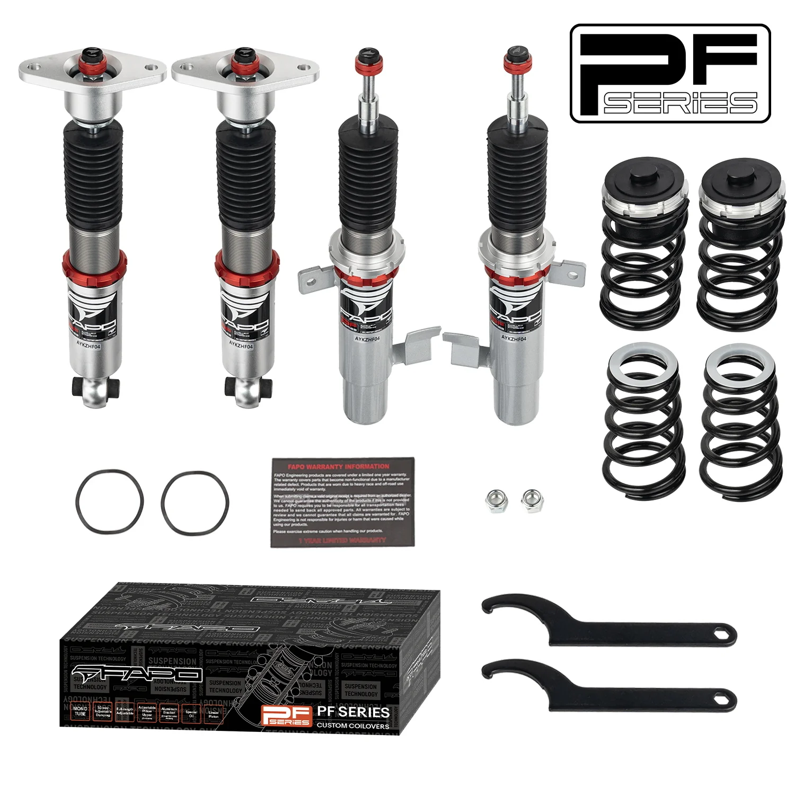

1 / 2332-Way Adjustable tłumienie Zawieszenie gwintowane do Volvo V60 1st Gen DE 11-18 & Volvo V60 1st Gen DE 2011-2018 PF027230
Kompatybilność pojazdu Ford Mondeo MK4 3. generacji CD345 2007-2014 Volvo V60 1. generacji DE 2011-2018 Volvo V70 3. generacji, USA 2007-2016 Volvo S60 2. generacji P3 2010-2018 Volvo S80 drugiej generacji P3 2006-2016 Volvo XC60 pierwszej generacji AU 2008-2017 Volvo XC70 3. generacji, USA 2007-2016 Pakiet zawiera Gwinty przednie × 2 szt Gwinty tylne × 2 szt Klucz × 2 szt Notatka: Nasz gwint to zestaw obniżający, k…
Vehicle Compatibility Ford Mondeo MK4 3rd Gen CD345 2007-2014 Volvo V60 1st Gen DE 2011-2018 Volvo V70 3rd Gen US 2007-2016 Volvo S60 2nd Gen P3 2010-2018 Volvo S80 2nd Gen P3 2006-2016 Volvo XC60 1st Gen AU 2008-2017 Volvo XC70 3rd Gen US 2007-2016 Package Includes Front coilovers × 2 pcs Rear coilovers × 2 pcs Wrench × 2 pcs Note: Our coilover is a lowering kit which will be 1-1.5"" lower than the factory height even at the max height. Please confirm you want to lower your car before purchasing. Features Mono-tube shock design provides larger capacity of oil and gas Adjustable ride height Adjustable pre-load spring tension High tensile performance spring - Under 600,000 continuous tests, spring distortion is less than 0.04%. Special surface treatment improves durability and performance All inserts come with fitted rubber boots to protect the damper and keep clean Improves handling performance without sacrificing ride comfort Fast and affordable way to upgrade your car's appearance Easy installation with right tools Ideal for track, drift, fast road and daily driving Accessories shown in photos are included Default 1-year warranty for any manufacturing defect, upgrade to 2 years with our Extended Warranty Program Technical Specifications Spring rate Front: 8 kg/mm (446 lbs/in) Spring rate Rear: 10 kg/mm (557 lbs/in) Adjustable height: Yes Adjustable camber plate: Front only; Rear with standard top mounts Adjustable damper: 32 levels of damping force adjustment
2499,99 PLN
Opis produktu
Kompatybilność pojazdu
- Ford Mondeo MK4 3. generacji CD345 2007-2014
- Volvo V60 1. generacji DE 2011-2018
- Volvo V70 3. generacji, USA 2007-2016
- Volvo S60 2. generacji P3 2010-2018
- Volvo S80 drugiej generacji P3 2006-2016
- Volvo XC60 pierwszej generacji AU 2008-2017
- Volvo XC70 3. generacji, USA 2007-2016
Pakiet zawiera
- Gwinty przednie × 2 szt
- Gwinty tylne × 2 szt
- Klucz × 2 szt
Notatka:Nasz gwint to zestaw obniżający, który będzie o 1-1,5 cala niższy niż wysokość fabryczna, nawet przy maksymalnej wysokości. Przed zakupem potwierdź chęć obniżenia samochodu.
Cechy
- Konstrukcja amortyzatora jednorurowego zapewnia większą pojemność oleju i gazu
- Regulowana wysokość jazdy
- Regulowane napięcie sprężyny wstępnej
- Sprężyna o wysokiej wytrzymałości na rozciąganie - w ramach 600 000 ciągłych testów odkształcenie sprężyny jest mniejsze niż 0,04%. Specjalna obróbka powierzchni poprawia trwałość i wydajność
- Do wszystkich wkładek dołączone są gumowe buty chroniące amortyzator i utrzymujące je w czystości
- Poprawia właściwości jezdne bez utraty komfortu jazdy
- Szybki i niedrogi sposób na poprawę wyglądu Twojego samochodu
- Łatwa instalacja przy użyciu odpowiednich narzędzi
- Idealny na tor, drift, szybką drogę i codzienną jazdę
- W zestawie akcesoria widoczne na zdjęciach
- Standardowa roczna gwarancja na każdą wadę produkcyjną, możliwość rozszerzenia do 2 lat w ramach naszego programu rozszerzonej gwarancji
Dane techniczne
- Tempo sprężyny Przód:8 kg/mm (446 lbs/in)
- Tempo sprężyny Tył:10 kg/mm (557 lbs/in)
- Regulowana wysokość:Tak
- Regulowana płyta camber:Tylko przód; Tył ze standardowymi mocowaniami górnymi
- Regulowany amortyzator:32 poziomy regulacji siły tłumienia
Vehicle Compatibility
- Ford Mondeo MK4 3rd Gen CD345 2007-2014
- Volvo V60 1st Gen DE 2011-2018
- Volvo V70 3rd Gen US 2007-2016
- Volvo S60 2nd Gen P3 2010-2018
- Volvo S80 2nd Gen P3 2006-2016
- Volvo XC60 1st Gen AU 2008-2017
- Volvo XC70 3rd Gen US 2007-2016
Package Includes
- Front coilovers × 2 pcs
- Rear coilovers × 2 pcs
- Wrench × 2 pcs
Note: Our coilover is a lowering kit which will be 1-1.5"" lower than the factory height even at the max height. Please confirm you want to lower your car before purchasing.
Features
- Mono-tube shock design provides larger capacity of oil and gas
- Adjustable ride height
- Adjustable pre-load spring tension
- High tensile performance spring - Under 600,000 continuous tests, spring distortion is less than 0.04%. Special surface treatment improves durability and performance
- All inserts come with fitted rubber boots to protect the damper and keep clean
- Improves handling performance without sacrificing ride comfort
- Fast and affordable way to upgrade your car's appearance
- Easy installation with right tools
- Ideal for track, drift, fast road and daily driving
- Accessories shown in photos are included
- Default 1-year warranty for any manufacturing defect, upgrade to 2 years with our Extended Warranty Program
Technical Specifications
- Spring rate Front: 8 kg/mm (446 lbs/in)
- Spring rate Rear: 10 kg/mm (557 lbs/in)
- Adjustable height: Yes
- Adjustable camber plate: Front only; Rear with standard top mounts
- Adjustable damper: 32 levels of damping force adjustment
FAPO Polska
Ten produkt obsługujemy lokalnie
Autoryzowana obsługa
FAPO Polska prowadzi katalog, kontakt i zamówienia bez odsyłania klienta do zewnętrznych sklepów.
Dobór po aucie
Sprawdzamy dopasowanie produktu do pojazdu, rocznika i wersji przed finalizacją zamówienia.
Wsparcie po zakupie
Masz kontakt w Polsce w sprawach zamówień, wysyłki, gwarancji i zwrotów.